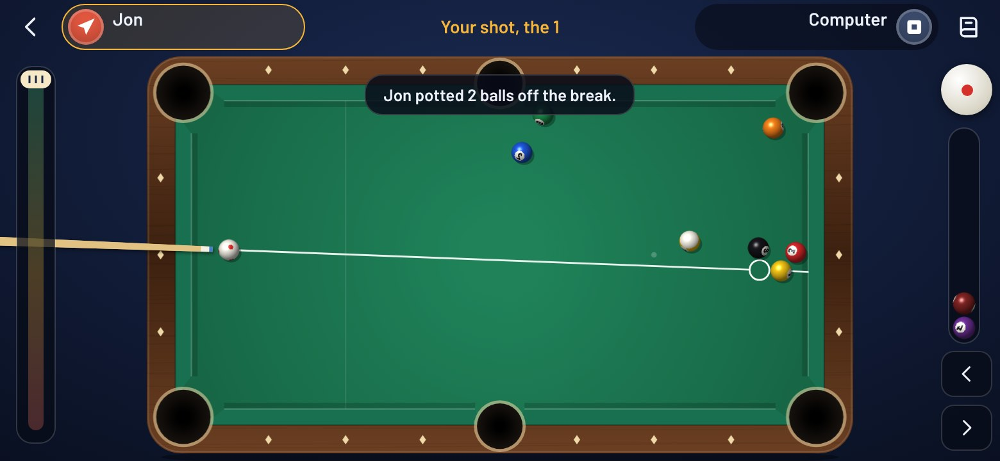
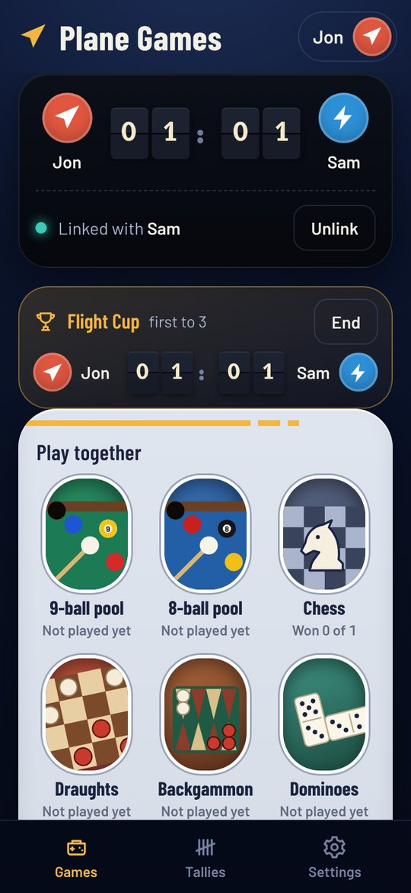
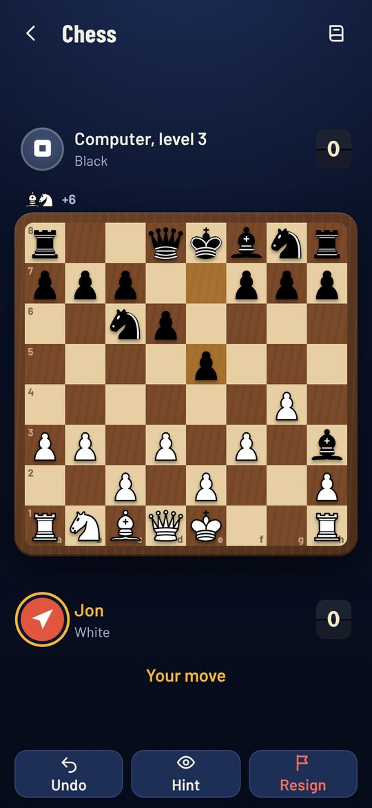
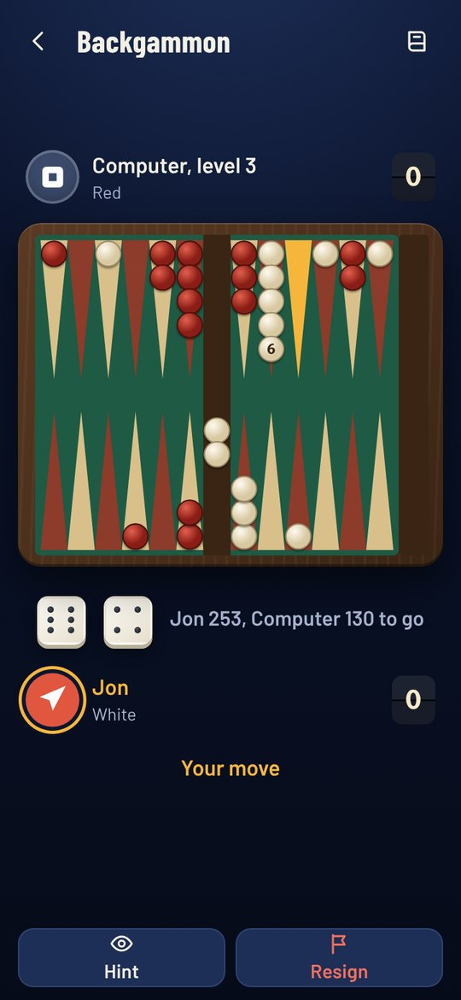
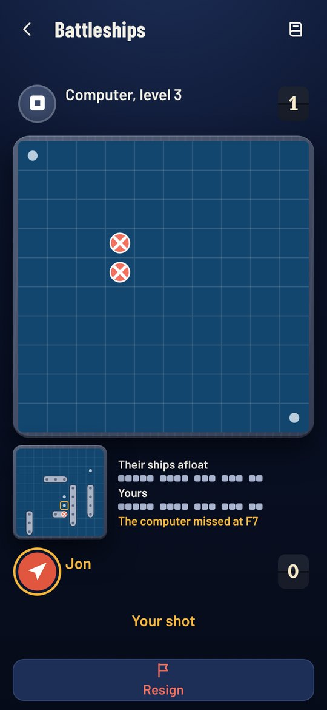
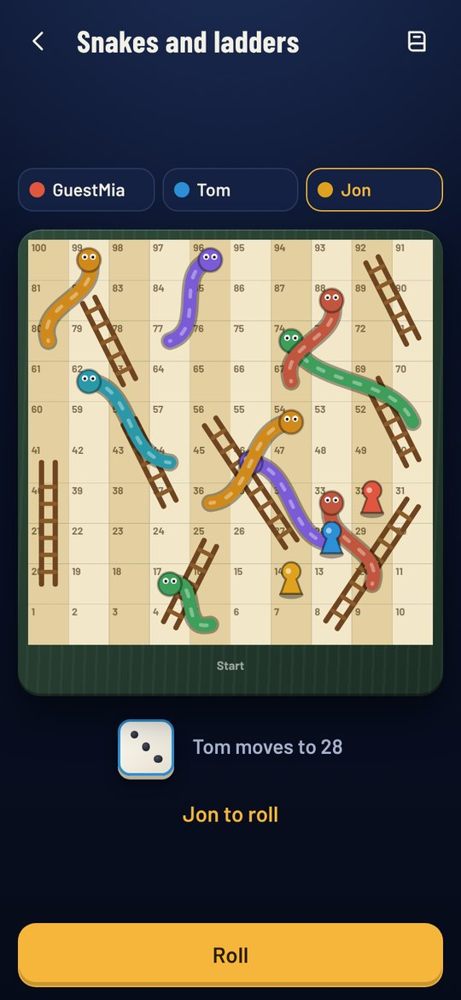
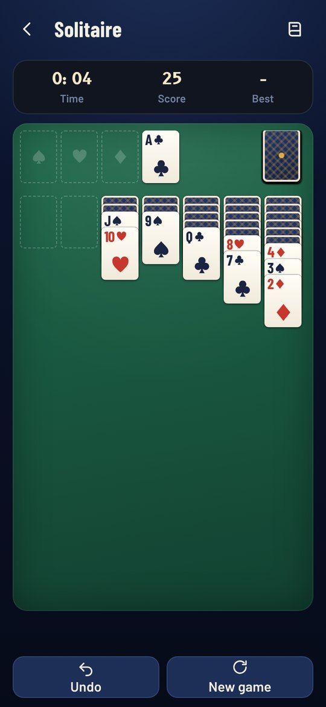
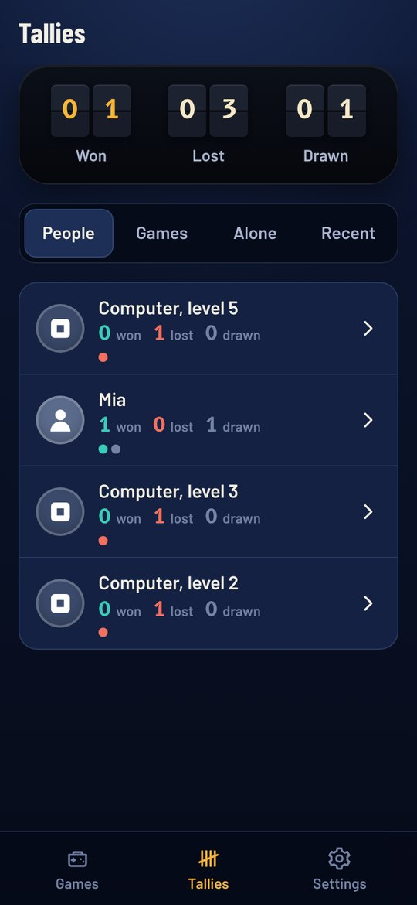
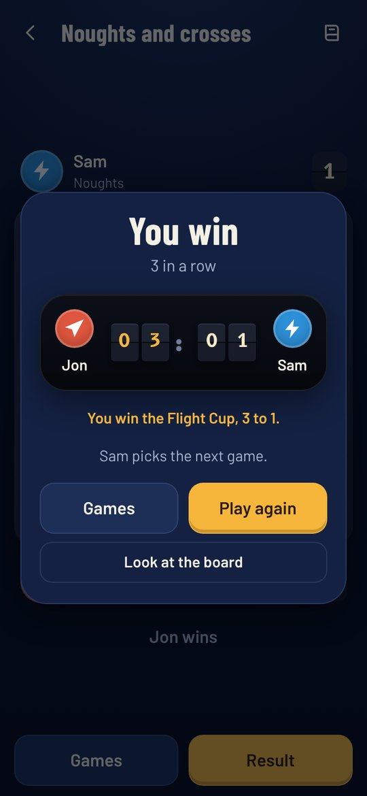

Games for two phones, no Wi‑Fi needed
Twenty games for the seat next to yours. Two Android phones link straight to each other, in flight mode or out of it, and keep score of who is winning.
Download for AndroidHow it works
Version 1.0. Android 8 or later. 4.8 MB. Free, with no adverts.

Twenty games on board
Fourteen to play against each other and six for when the other seat is asleep. Every one of them works with no signal.
- 9-ball pool2 players
- 8-ball pool2 players
- Chess2 players
- Draughts2 players
- Backgammon2 players
- Dominoes2 to 4
- Battleships2 players
- Connect 42 players
- Reversi2 players
- Ludo2 to 4
- Snakes and ladders2 to 4
- Dots and boxes2 to 4
- Hangman2 players
- Noughts and crosses2 players
- Solitaire1 player
- FreeCell1 player
- Spider1 player
- Minesweeper1 player
- Sudoku1 player
- 20481 player
Two phones, one phone, or against the computerPlayed alone
How it works
From nothing to the first move takes about a minute, and none of it needs the internet.
Get it on both phones
Download it once. For the second phone, open Invite and send the app across by Quick Share or Bluetooth.
Link the phones
One of you hosts, the other joins by tapping the host's name or scanning the code. Check the number matches and tap Link.
Pick a game
Choose a game and its rules on one phone. The other phone shows what is proposed, and the game starts on both.
Two phones
Each of you plays on your own screen. Moves, dice and the pool cue show on both as they happen.
One phone
Pass it between you. Ludo, snakes and ladders, dominoes and dots and boxes take up to four.
Against the computer
Five levels, with hints and undo. Good practice before the rematch.
Good to know before you start
Five things that save a puzzled minute at 35,000 feet.
- Install it before you fly.Download it while you still have a connection. After that it needs none.
- In flight mode, switch Bluetooth back on.The phones find each other by Bluetooth and move the game over direct Wi-Fi. Switch Wi-Fi back on too if your phone lets you. Follow the cabin crew's instructions.
- Both phones need the app, and both must be Android.One phone can send it to the other with no internet. iPhones cannot join.
- The first link asks for a permission.Android calls it Nearby devices. On Android 12 and older it also asks for Location, and Location must be switched on. The app does not read where you are.
- Linking uses Google Play services.Nearly every Android phone has it. A phone without it, such as recent Huawei models, can still play on one phone and against the computer.
What it looks like
Real tables, boards and pieces, drawn for a small screen in a dark cabin. There is a lighter look for daytime and a true-black one for night flights.








Everything is in, and all of it is free
Nothing is held back for a paid version, because there is no paid version.
A record against each person
Won, lost and drawn against everyone you have played, game by game, with your current run. Each computer level has its own record too.
The Flight Cup
Start a contest with the person beside you: first to three, five or seven wins, over any games you like. The loser of each game picks the next.
Honest computer levels
Five levels in every two-player game, from easy to hard. Chess uses the Stockfish engine. Against the computer you can take a move back, and most of the board games will give a hint.
Dice and shuffles nobody can fix
Over the link, both phones make each dice roll and shuffle together, so neither can choose it. Battleship fleets and hangman words are locked in before the first move.
A dropped link picks itself up
If the phones lose each other the game is saved on both and carries on from the same move when they meet again.
Head starts
Give a weaker player a pawn, a knight, a rook or a queen at chess, a man or two at draughts, or the long aiming line at pool.
Clocks
Five, ten or thirty minutes each for chess and draughts. Each phone calls time on its own player, so a slow link cannot cost anyone the game.
Watch a game again
The last forty finished games are kept. Step through one move at a time, or let it play.
More than one player on a phone
Children sharing a phone each get their own name, badge and tallies.
Puzzle book and bests
Sixty numbered sudoku at each of four levels, the same on every phone, so two of you can race one. Best times and scores for every game played alone.
Quiet by default
Sounds are off until you turn them on, with a small vibration when a move lands. A dimmer true-black look for a dark cabin, and a battery saver.
Yours to keep
One backup file holds everyone's tallies and cups, to keep safe or move to a new phone. No account, no adverts, nothing to unlock.
What it asks of your phone
Only what linking two phones needs. Play alone or against the computer and it asks for nothing.
| Access | Why | When |
|---|---|---|
| Nearby devices | To find and link to the other phone by Bluetooth and Wi-Fi | Only when you open Link phones |
| Location, on Android 12 and older | Android will not let an app look for nearby phones without it. The app never reads where you are | Only when you open Link phones |
| Camera | To scan the code on the other phone's screen | Only if you choose to scan rather than tap a name |
| The internet | To look for a newer version. Nothing about you or your games is sent | About twice a day when there is a connection, and when you ask |
| Files you choose | To save a backup file or bring one back | Only for the file you pick, when you ask |
What Plane Games can and cannot do
Plainly, so there are no surprises after take-off.
It can
- Play all twenty games with no internet at all
- Link two Android phones a few seats apart, in flight mode or out of it
- Send itself to another Android phone with no internet
- Carry a game on after the link drops, or after either phone is put away
- Keep every tally on your phone and in a backup file you control
It cannot
- Play someone who is not beside you. There is no online play
- Link with an iPhone, or link more than two phones at once
- Link on a phone without Google Play services
- Promise to behave the same on every phone. It is new; if something does not work on yours, please report it
Questions
Does it really work with no internet?
Yes. Every game is inside the app. Two phones link straight to each other by Bluetooth and Wi-Fi, without a router, a hotspot or mobile data. The only time the app uses the internet is to look for a newer version, and it carries on quietly if there is none.
Does it work in flight mode?
Yes. Switch flight mode on, then switch Bluetooth back on, and Wi-Fi as well if your phone lets you. The link screen shows what is switched off and has a button for each. Games against the computer, games on one phone and the one-player games need nothing switched on at all.
Always follow the cabin crew's instructions about phones.
Do both of us need the app?
To play on two phones, yes. If the other person does not have it, open Invite in the app and choose Send the app: it goes from your phone to theirs by Quick Share or Bluetooth, with no internet. You can also play on one phone, passing it between you.
Can an iPhone join in?
No. Plane Games is for Android only, and two phones can link only if both run it. An iPhone owner can still play on your phone in pass-and-play.
How do two phones link?
Both open Link phones. One taps Host and the other taps Join, then taps the host's name or scans the code on the host's screen. Both phones show the same short number; check it matches and tap Link. Phones that have linked before can skip the number check.
Why does it ask for Nearby devices, or for Location?
Android will not let any app find a phone nearby without it. On Android 13 and later the permission is called Nearby devices. On Android 12 and older, Android also asks for Location and needs Location switched on while the phones find each other. Plane Games never reads where you are.
How far apart can the phones be?
Keep them within a few seats of each other. Walls, seat backs and people in between shorten the range.
Is the pool like the one I know?
It is 9-ball and 8-ball played by touch: drag to aim, set spin on the cue ball, pull the power bar back and let go. 8-ball can be played by UK pub rules, with two shots after a foul, or with ball in hand. The aiming line can be long, short or off.
Is Plane Games on Google Play?
No. It is downloaded from this site as an app file. That is why Chrome and Play Protect ask you to confirm when you install it.
How do I move my tallies to a new phone?
In Settings choose Save a backup file and send that file to the new phone. There, choose Bring back a backup and pick the file.
How do I update?
When there is internet the app looks for a newer version about twice a day and says so on the home screen. Download the new file from this site and open it; it installs over the old one and keeps your tallies. Settings also has Check for a newer version, and a button that copies the link where every version is published.
Is it really free?
Yes. There are no adverts, no purchases and no account.
Getting Plane Games
One file, 4.8 MB. Do it at the gate, not on the runway.
Version 1.0. Android 8 or later. Release notes
- Tap Download. Chrome may say the file might be harmful. It shows this for app files that do not come from Google Play. Choose Download anyway.
- Open the downloaded file. The first time, Android asks you to allow your browser to install apps. Allow it, go back, and tap Install.
- If Google Play Protect steps in, choose More details, then Install anyway.
- Open Plane Games and give yourself a name. To put it on a second phone, open Invite.
To be sure the file is the real one, compare its checksum with the one on the release notes page.